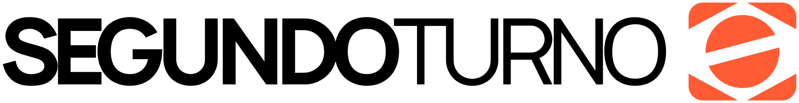

UM TESTE PARA ENTENDER SEU VOTO
Responda perguntas rápidas e descubra como suas opiniões se aproximam das propostas e posições de cada candidato.
ANTES DE COMEÇAR
Os dois testes analisam os mesmos 7 eixos. O curto prioriza os temas mais centrais; o detalhado usa 8 perguntas por eixo para reduzir o peso de uma resposta isolada.
SOBRE ECONOMIA
SEU RESULTADO
CORRENTES PRÓXIMAS
ELEIÇÕES 2026 · 2º TURNO
As posições abaixo são uma síntese aproximada dos planos de governo e de posições públicas em 2026. Elas servem para comparação informativa — não são uma recomendação de voto nem um índice de compatibilidade.
proximidade nos eixos deste teste ≠ apoio, identificação partidária ou recomendação de voto
Manter o teste atualizado exige pesquisa, revisão das perguntas e evolução do produto. Se ele foi útil para você, considere apoiar o projeto.